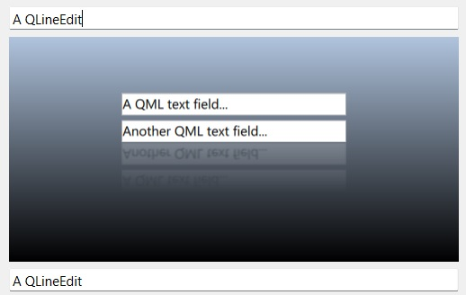

Qt Quick Examples - Embedded in Widgets
Demonstrates embedding a QQuickWindow into a QWidget UI via QWidget::createWindowContainer().

This example demonstrates one of the approaches to adding Qt Quick content into a QWidget-based application. QQuickView, and its parent class, QQuickWindow derive from QWindow. This means that they can be used with QWidget::createWindowContainer(), like any other QWindow.
Running the Example
To run the example from Qt Creator, open the Welcome mode and select the example from Examples. For more information, visit Building and Running an Example.
Embedding the window internally leads to creating a native child widget inside the widget hierarchy, and the window (the QQuickView in the example) is reparented. The container widget takes care of repositioning the child window so that it appears to be part of the user interface, even though in reality it is separate native window that paints independently from its parent, the QWidget-based top-level window.
MainWindow::MainWindow() : m_quickView(new QQuickView) { QWidget *centralWidget = new QWidget(this); QVBoxLayout *layout = new QVBoxLayout(centralWidget); m_quickView->setResizeMode(QQuickView::SizeRootObjectToView); connect(m_quickView, &QQuickView::statusChanged, this, &MainWindow::quickViewStatusChanged); connect(m_quickView, &QQuickWindow::sceneGraphError, this, &MainWindow::sceneGraphError); m_quickView->loadFromModule("embeddedinwidgets", "Main"); QWidget *container = QWidget::createWindowContainer(m_quickView); container->setMinimumSize(m_quickView->size()); container->setFocusPolicy(Qt::TabFocus); layout->addWidget(new QLineEdit(QStringLiteral("A QLineEdit"))); layout->addWidget(container); layout->addWidget(new QLineEdit(QStringLiteral("A QLineEdit"))); setCentralWidget(centralWidget); QMenu *fileMenu = menuBar()->addMenu(tr("File")); fileMenu->addAction(tr("Quit"), qApp, &QCoreApplication::quit); }
The key step during initialization is the creation of container, a QWidget that wraps and hosts the QQuickView. This widget can then added to a layout like any other QWidget.
Note: Using native window embedding is just one possible approach to combining QWidget and Qt Quick user interfaces. The other, more commonly used approach for this is QQuickWidget. See the Qt Quick Widgets Example for an example of using QQuickWidget. There are significant differences internally when it comes to rendering and event handling. QQuickWidget does not use native windows at all and redirects the Qt Quick rendering into a texture that is then composited with the rest of the QWidget content via a 3D graphics API such as OpenGL or Vulkan. This brings more flexibility, at the expense of performance. It also works on platforms where there is no actual windowing system and no concept of native windows. Whereas the window embedding approach demonstrated by this example can be more performant, but it is best suited for user interfaces where the Qt Quick content occupies a fixed rectangular area and is not resized, stacked, or clipped afterwards.
See also QWidget::createWindowContainer().